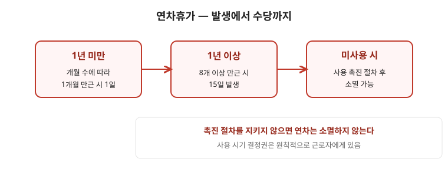

연차휴가는 근로자의 권리입니다. 사용 시기를 정하는 권한도 원칙적으로 근로자에게 있고, 회사가 일방적으로 소멸시킬 수 없습니다. 이 글은 처음 연차를 쓰는 분이 발생 → 사용 → 촉진 → 수당 순서로 한 번에 이해하도록 정리한 안내입니다. 개별 출근율 계산과 소멸 여부는 사실관계에 따라 달라지므로, 마지막 점검표까지 읽은 뒤 문의나 전문가 상담으로 확인하세요.

한눈에 보는 표
| 구분 | 기준 | 발생 |
|---|---|---|
| 1년 미만 | 1개월 만근 | 1일 (최대 11일) |
| 1년 이상 | 1년간 소정근로일 80% 이상 출근 | 15일 (3년 이상은 2년마다 1일 가산, 최대 25일) |
| 미사용 | 사용 촉진 절차 준수 여부 | 절차 위반 시 소멸 안 됨 · 수당 청구 가능 |
1. 언제 얼마나 생기나
- 1년간 출근율이 기준(소정근로일 대비 80% 이상)을 채우면 다음 해에 연차가 발생합니다. 1년 미만인 경우에는 개월 수에 따라 1개월 만근 시 1일씩 발생합니다.
- 출근율 계산에서 제외되는 기간이 있습니다. 업무상 부상·질병 요양, 육아휴직 등 법이 정한 기간은 출근한 것으로 봅니다. 본인의 재직 이력과 휴직 기록을 기준으로 확인해 두세요.
- 단시간 근로자도 근로시간 비율에 따라 연차가 발생합니다. “아르바이트는 연차가 없다”는 말은 사실이 아닙니다.
2. 사용 시기 — 누가 정하나
- 사용 시기는 근로자가 정하는 것이 원칙입니다. 회사는 사업 운영에 막대한 지장이 있을 때만 시기를 변경할 수 있고, 연차 자체를 거부할 수는 없습니다.
- 연차를 이유로 불이익(인사·평가·계약갱신 거절 등)을 주거나, 입사 때 “연차를 미리 포기한다”는 서류에 서명을 요구하는 것은 문제가 됩니다. 그런 서류를 받았다면 사본을 보관하세요.
- 사용 계획은 말보다 문서가 강합니다. 메신저·메일로 신청하고 승인 내역을 저장해 두면 나중에 분쟁이 생겨도 입증이 쉽습니다.
3. 사용 촉진 제도 — 소멸 조건이 까다롭다
- 회사가 연차 사용을 촉진하면 미사용분이 소멸할 수 있습니다. 다만 법이 정한 절차와 시기를 지켜야 효력이 생깁니다. 서면 통지 시점, 촉구 횟수, 사용 시기 지정 절차 중 하나라도 어긋나면 소멸 효력이 없습니다.
- 촉진 서면을 받았다면 내용과 날짜를 확인하고, 사용 계획을 문서로 남기세요. “언제까지 쓰라”는 통보를 받고도 쓰지 않은 경우와, 통보 자체가 없었던 경우는 결과가 다릅니다.
- 촉진 절차가 적법했는지 확신이 없으면 서면을 버리지 말고 보관한 채 전문가 상담을 받으세요.
4. 못 쓴 연차 — 수당으로 청구
- 사용하지 못한 연차는 원칙적으로 수당으로 청구할 수 있습니다. 계산 기준은 통상임금 또는 평균임금이며, 취업규칙·단체협약에 별도 기준이 있으면 그 기준을 먼저 봅니다.
- 연차수당도 임금채권이라 소멸시효가 있습니다. 퇴직 시 남은 연차 정산이 누락되는 경우가 많으니, 퇴직 전 잔여일수를 스스로 기록하고 급여명세서와 대조하세요.
- 퇴직 전이라면 잔여일수 확인 → 사용 신청 → 미사용분 수당 정산 요청 순서로 진행하는 것이 안전합니다.
자주 틀리는 3가지
- “1년 안 되면 연차 0개” — 1년 미만도 1개월 만근 시 1일씩 발생합니다.
- “회사가 지정한 날만 써야 한다” — 사용 시기 결정권은 원칙적으로 근로자에게 있습니다.
- “안 쓰면 자동 소멸” — 적법한 촉진 절차가 있어야 소멸합니다. 절차 위반 시 수당 청구가 가능합니다.
현장 체크리스트
- □ 입사일·재직 기간·휴직 기간을 메모했는가
- □ 급여명세서에서 연차수당 항목을 확인했는가
- □ 촉진 서면을 받았다면 날짜·내용을 보관했는가
- □ 사용 신청을 문서(메일·메신저)로 남겼는가
- □ 퇴직 전 잔여일수를 직접 셌는가
자주 묻는 질문
- Q. 퇴직하면 남은 연차는 어떻게 되나요? — A. 미사용분은 수당으로 정산하는 것이 원칙입니다. 퇴직 전 잔여일수를 기록하고 정산 내역을 요구하세요.
- Q. 촉진 서면을 받았는데 안 썼습니다. — A. 절차가 적법했다면 소멸할 수 있습니다. 서면의 날짜·횟수가 법정 요건을 갖췄는지 확인이 필요합니다.
- Q. 단시간 근로자도 연차가 있나요? — A. 있습니다. 소정근로시간 비율로 계산합니다.
- Q. 연차 썼다고 불이익을 받았습니다. — A. 연차 사용을 이유로 한 불이익은 문제가 될 수 있습니다. 인사·평가 기록을 시점별로 보관하고 상담을 받으세요.
근거와 원문
- 근로기준법 연차유급휴가 규정 — 국가법령정보센터에서 “근로기준법” 검색
- 연차 해석과 행정해석 — 고용노동부 민원·행정해석 코너
- 관련 글: 근로시간과 연장근로 · 임금 소멸시효 · 퇴직금
이 글은 2026-09-19 기준 일반 안내입니다. 출근율 산정과 소멸 요건은 개별 사실관계에 따라 달라지므로 노무 상담으로 확인하세요. 법률 자문이 아닙니다.